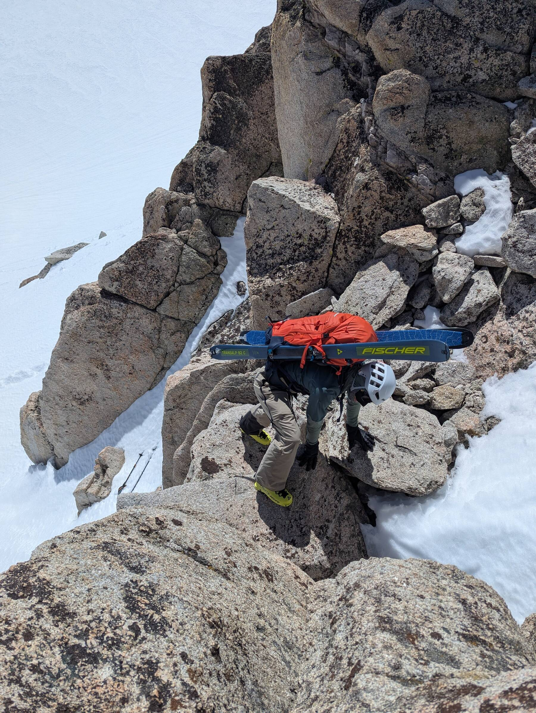

melvin ~ ❯ whoami
Melvin Gruesbeck
operator · designer · wayfinder
melvin ~ ❯ cat about.md
I bring a blend of engineering, design, communications, and operations experience, built exclusively alongside research teams at the seed, hyper-growth, and Fortune 100 stages.
Most recently at Profluent Bio, I built the business infrastructure bridging finance, legal, HR, IT, compliance, and communications, and optimized them as we scaled to eliminate bottlenecks before they compounded. By developing this connective tissue, I helped transform a one-room operation into a mature startup capable of raising nine-figure funding and signing billion-dollar partnerships in a highly regulated industry.
On weekends I backcountry ski, ride motorcycles, and fix things with power tools.
melvin ~ ❯ open scramble.jpg

photo: Brendan King
melvin ~ ❯ cat gear.json
{ "pack": "Mammut ski pack, nearly empty. Ski partner is a moving pantry.", "skis": "Fischer Transalp 82 Carbonlite, currently an expensive backpack accessory.", "helmet": "Petzl Meteor, protecting the operation's most valuable asset.", "gloves": "Black leather gloves, four-wheel-drive mode engaged.", "boots": "Fischer Travers CS, built for skiing, used for climbing.", "poles": "Ski poles, tossed down. Gravity handles logistics." }
// hover a dot or a line
melvin ~ ❯ ls experience/
- Head of CommunicationsProfluent · Emeryville, CA2025 – 2026
- Head of OperationsProfluent · Berkeley, CA2022 – 2025
- Design EngineerSalesforce · Palo Alto, CA2016 – 2021
- Design EngineerMetaMind · Palo Alto, CA2015 – 2016
- Design, Marketing, PhotographyEarly Career · Napa Valley, CA2009 – 2015
melvin ~ ❯ ls contributions/
- The AI Economist: Improving Equality and Productivity with AI-Driven Tax PoliciesFigure & Interface DesignScience Advances
- Deep learning-enabled breast cancer hormonal receptor status determination from base-level H&E stainsFigure DesignNature Magazine
- Learning to Retrieve Reasoning Paths over Wikipedia Graph for Question AnsweringFigure DesignICLR
- PHOTON: A Robust Cross-Domain Text-to-SQL SystemFigure DesignACL
- SParC: Cross-Domain Semantic Parsing in ContextFigure DesignACL
- Large language models generate functional protein sequences across diverse familiesFigure DesignNature Biotechnology
- XLDA: Cross-Lingual Data Augmentation for Natural Language Inference and Question AnsweringFigure DesignPreprint
- Explain Yourself! Leveraging Language Models for Commonsense ReasoningFigure DesignPreprint
melvin ~ ❯ ls kit/
- Design ConsultantUniversity of California, San Franciscovolunteer
- Public Affairs (ADSO-PA)US Coast Guard Auxiliaryvolunteer
- AIARE 1American Institute for Avalanche Research & Educationcert
- FORM+FUND FellowshipUniversity of California, Berkeleycert
- Lead Renovation, Repair and Painting ProgramUS Environmental Protection Agency (EPA)cert
- Open Water / Advanced Open Water / Rescue DiverProfessional Association of Diving Instructorscert
- M1California Department of Motor Vehiclescert
- P1 / P2US Hang Gliding & Paragliding Associationcert
- Traditional Hunter EducationCalifornia Department of Fish and Wildlifecert
melvin ~ ❯ ls education/
- Journalism & PR (BS)Pacific Union College2007–2012
- Photography (AS)Pacific Union College2007–2012
melvin ~ ❯ cat reads.txt
Ball Lightning, Bargaining for Advantage: Negotiation Strategies for Reasonable People, Billion Dollar Lessons, Death’s End, Forecast: What Physics, Meteorology, and the Natural Sciences Can Teach Us About Economics, Good to Great, Leaving the Atocha Station, Math Without Numbers, Nudge, Principles, Sapiens: A Brief History of Humankind, Tao Te Ching, The Alchemy of Finance, The Ascent of Money, The Dark Forest, The Order of Time, The Pleasure of Finding Things Out, Thinking Strategically: The Competitive Edge in Business, Politics, and Everyday Life, Understanding the US Government, Zen and the Art of Motorcycle Maintenance, Zero to One.
melvin ~ ❯ open --links